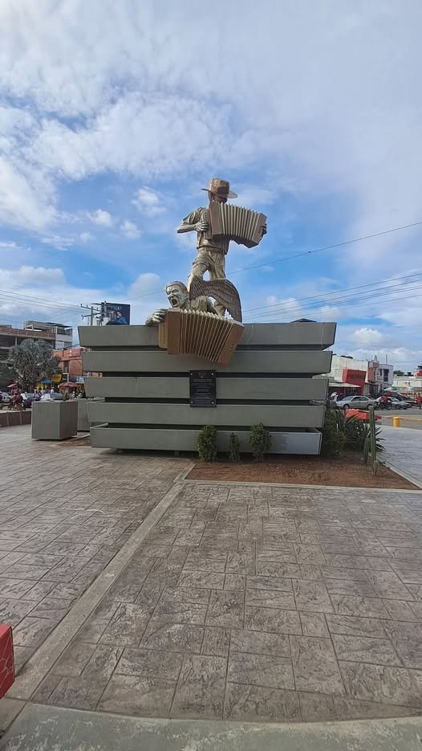
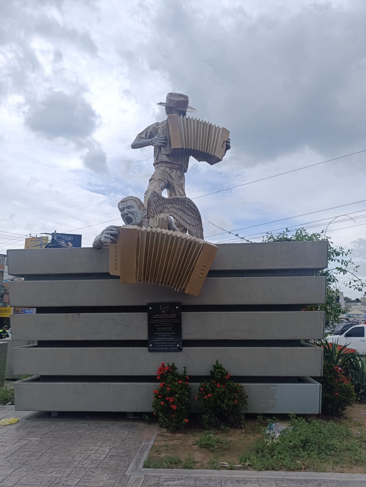
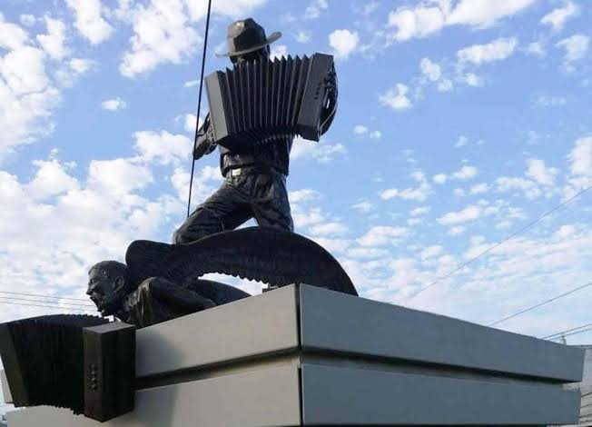
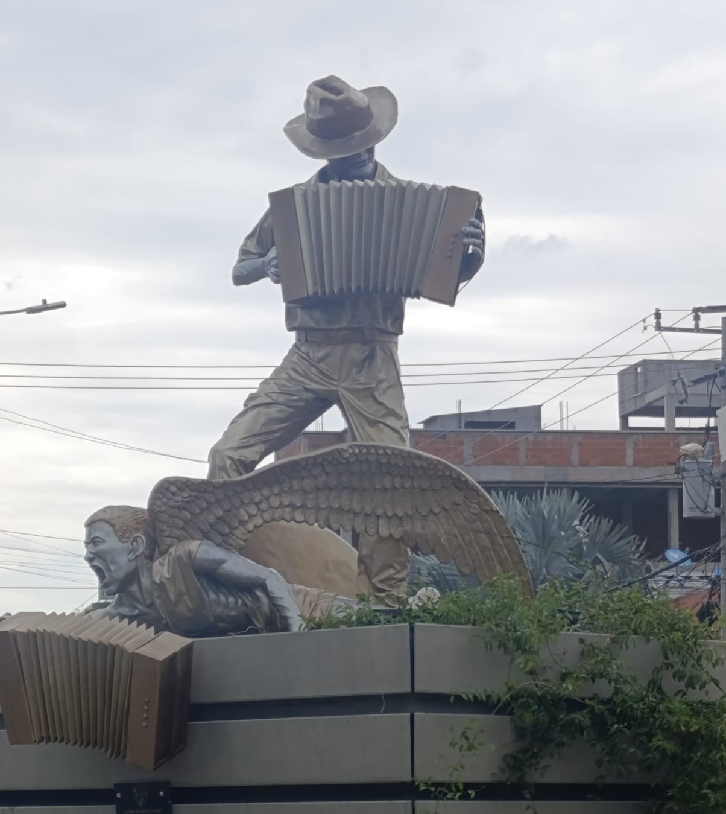

Completa este formulario breve antes de ver la información del monumento. Tus respuestas son anónimas.
Selecciona una opción en cada sección para continuar.
Información anónima · Solo datos estadísticos

Francisco Moscote Guerra, conocido como Francisco El Hombre, es el juglar guajiro que la tradición oral recuerda por vencer al diablo en un duelo de acordeón. Su historia resume la fuerza del vallenato, la memoria popular y el orgullo cultural de Riohacha.
La Leyenda recrea el triunfo simbólico del juglar sobre el mal: Francisco aparece unido a su acordeón, mientras la figura vencida bajo sus pies representa la derrota de la oscuridad ante la música y la memoria popular.
Obra tridimensional elaborada en fibra de vidrio pigmentada y reforzada con acero.



El monumento se encuentra en la glorieta de la carrera 7 con calle 15, un punto de referencia urbano dentro de Riohacha.
Ver ubicación en Google Maps